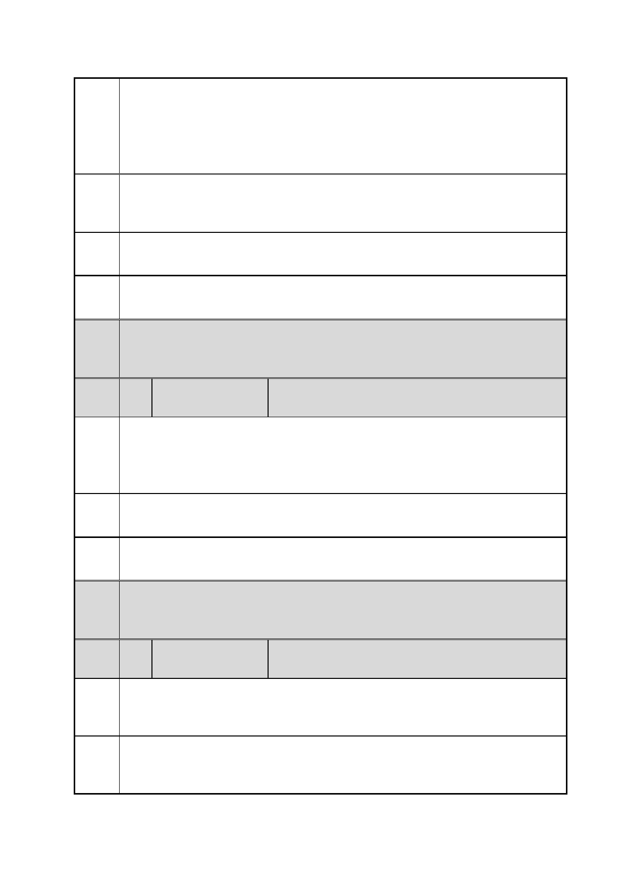

臺北市都市計畫委員會 公民或團體陳情意見綜理表
「變更臺北市信義區逸仙段二小段 33 地號等 21 筆土地（原臺北機廠）
案
名
工業區為創意文化專用區、特定專用區、道路及綠地用地主要計畫案」
及「擬定臺北市信義區逸仙段二小段 33 地號等 21 筆土地（原臺北機
廠）創意文化專用區、特定專用區、道路及綠地用地細部計畫暨劃定
都市更新地區計畫案」
陳情
理由
市民建議相關單位限制這塊土地使用方式，市民表示不能圖利財團，
也不要在此處蓋美術館、博物館，希望臺北市政府將此處規劃為住商
辦公大樓給創業青年承租。
建議 |敬請相關單位參酌辦理
辦法
市府 一、有關臺北機廠再利用之定位，同編號 2 市府回應內容。
回應 二、本計畫特定專用區（一）、（二）將提供商務、辦公機能。
委員
會議 內容同編號 1。
決議
編
號
10 陳情人
吳○儒（市府發展局網站留言意見）
陳情
理由
我不反對都市更新，但我反對為了都市更新而把台灣最重要的歷史文
化給抹剎掉，如果你們還算是位台北人，就更應該站出來保護自己的
文化，如果認為不重要，那麼就試著回想一下當初第一次坐著火車時
的那份珍貴的回憶。
建議
辦法
市府 同編號 1 市府回應內容。
回應
委員
會議 內容同編號 1。
決議
編
號
11 陳情人
台北市瑠公農田水利會
陳情
理由
本會為本變更案內唯一私有土地所有權人，本案申請人（交通部臺灣
鐵路管理局）不應將本會 35－3、 35－4 及 42 地號等 3 筆土地全部
劃設為道路及綠地用地，卻盡享用地變更後土地開發之全部利益。
建議
辦法
基於使用者負擔及受益者付費之工業區用地變更原則，建議應採比例
原則，就其管有土地劃設相當之道路及綠地用地，並維持本會部分土
地建築開發之權益。
第 21 頁/共 154 頁